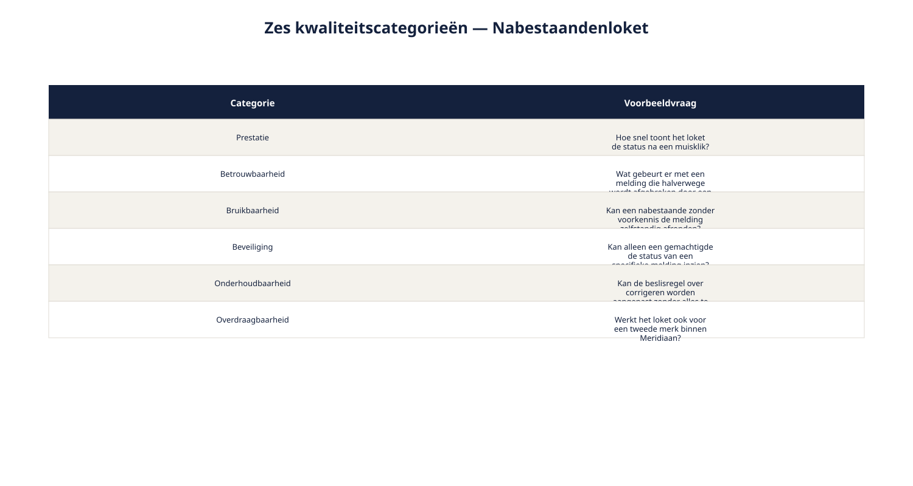
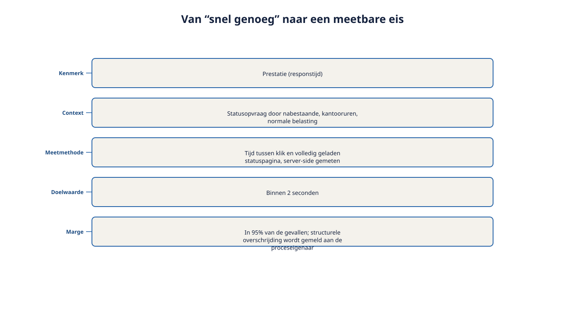

Deel 8 — Kwaliteitseisen en randvoorwaarden meetbaar maken
Slidedeck · Ductus-cursus Requirements engineering · niveau 1 · deel 8 van 10 · 29 slides
Slide 1 — Titel
Kwaliteitseisen en randvoorwaarden meetbaar maken
Cursus Requirements Engineering — Niveau 1, deel 8
Ductus
Slide 2 — Vandaag
- Zes kwaliteitscategorieën
- Het vijfdelige format
- Meten wat niet in een getal past
- Randvoorwaarden correct vastleggen
- Bevinding R5 sluiten
Slide 3 — Citaat
"Snel genoeg, stond er. Bij de acceptatie zei de leverancier: hij is snel genoeg. Wij vonden van niet. Dat gesprek konden we niet winnen."
Post-mortem WGP 2.0
Slide 4 — Beide partijen hadden gelijk.
En geen van beide had gelijk.
Er was niets om aan te toetsen.
Slide 5 — 1. Zes kwaliteitscategorieën
Slide 6 — Een zoekinstrument, geen classificatiesysteem
- Prestatie — hoe snel, hoeveel tegelijk
- Betrouwbaarheid — hoe vaak werkt het, wat bij falen
- Bruikbaarheid — hoe makkelijk leert en gebruikt men het
- Beveiliging — wie mag wat zien of doen
- Onderhoudbaarheid — hoe makkelijk aan te passen
- Overdraagbaarheid — hoe makkelijk elders te laten werken
Slide 7 — Figuur 8-1

Slide 8 — Opdracht 8.1 — Welk kwaliteitskenmerk?
Vijf uitspraken. Benoem het kenmerk (of de kenmerken).
Individueel · 10 minuten
Slide 9 — 2. Het vijfdelige format
Slide 10 — Vijf onderdelen
- Kenmerk — welke categorie?
- Context — onder welke omstandigheden, voor wie?
- Meetmethode — hoe stel je het objectief vast?
- Doelwaarde — welk concreet criterium?
- Marge — welke afwijking is nog acceptabel?
Slide 11 — "Snel genoeg" ontleed
| Onderdeel | Invulling |
|---|---|
| Kenmerk | Prestatie (responstijd) |
| Context | Statuspagina, kantooruren, normale belasting |
| Meetmethode | Tijd klik → volledig geladen, server-side gemeten |
| Doelwaarde | Binnen 2 seconden |
| Marge | In 95% van de gevallen |
Slide 12 — Citaat
"Als een nabestaande de statuspagina opvraagt tijdens kantooruren onder normale belasting, moet het systeem deze binnen 2 seconden volledig laden, in minimaal 95% van de gevallen."
Slide 13 — Het gesprek dat niet te winnen was,
wordt een meting die niemand hoeft te winnen.
De uitkomst staat vast vóórdat het gesprek begint.
Slide 14 — Figuur 8-2

Slide 15 — Opdracht 8.2 — Het format toepassen
Twee vage kwaliteitsintenties herformuleren.
Plus de sjabloonzin uit deel 6.
Tweetallen · 25 minuten
Slide 16 — 3. Meten wat niet in een getal past
Slide 17 — Bruikbaarheid, toch toetsbaar
| Onderdeel | Invulling |
|---|---|
| Kenmerk | Bruikbaarheid |
| Context | Nabestaande zonder voorkennis, emotioneel belast |
| Meetmethode | Gebruikerstest: % dat zelfstandig afrondt |
| Doelwaarde | Minimaal 90% |
| Marge | Bij 2× onder 90%: ontwerp herzien |
Slide 18 — Geen stopwatch. Wel een methode, een getal, en een afspraak.
Dát is het verschil met "gebruiksvriendelijk, ook voor ouderen".
Slide 19 — Opdracht 8.3 — Meten wat niet in een getal past
Eén kwaliteitsintentie, met een niet-triviale meetmethode.
Groepjes van drie · 20 minuten
Slide 20 — 4. Randvoorwaarden
Slide 21 — Een grens, geen doel
| Onderdeel | Invulling |
|---|---|
| Randvoorwaarde | Geen scans van identiteitsdocumenten |
| Bron | Intern beleidsbesluit Meridiaan, 2024 |
| Reden | Risicobeperking bij datalekken |
Slide 22 — Geen doelwaarde. Geen onderhandeling.
Je toetst alleen: klopt de bron nog?
Een randvoorwaarde zonder bron is een gewoonte die niemand meer durft te bevragen.
Slide 23 — Opdracht 8.4 — Randvoorwaarde of kwaliteitseis?
Vier uitspraken. Bepaal en werk uit met het bijpassende format.
Individueel · 15 minuten
Slide 24 — 5. Het gesprek vooraf voeren
Slide 25 — Opdracht 8.5 — Het acceptatiegesprek
Speel het gesprek twee keer: vaag, dan met het format.
Wat verandert er?
Drietallen · 20 minuten
Slide 26 — Wat verandert er als je iteratief werkt?
- Kwaliteitseisen vaak in een gedeelde "definitie van klaar"
- Zelfde risico, groter bereik: een vage definitie van klaar treft élk backlogitem tegelijk
Slide 27 — 6. Bevinding R5
Slide 28 — R5 gesloten
| Bevinding | Wat je nu hebt |
|---|---|
| Kwaliteitseisen als bijvoeglijke naamwoorden | Zes categorieën om systematisch te zoeken |
| Vijfdelig format voor kwaliteitseisen | |
| Apart format voor randvoorwaarden |
Slide 29 — Volgende keer: deel 9
Valideren, afstemmen en de beheerbasis
Daarmee sluiten we R6 en R7 — en niveau 1 is compleet.